In this recipe, we will create a SOA Suite composite application, which has a BPEL service component with a synchronous Direct Binding service interface. The direct binding interface will be invoked from an OSB business service through the SOA-DIRECT transport:
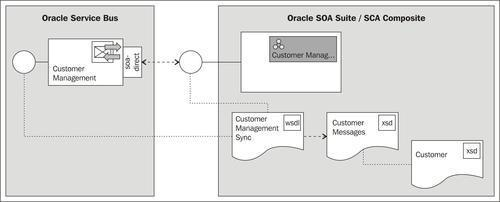
The SOA-DIRECT transport supports transactions and identity propagation across JVMs and uses the T3 RMI protocol to communicate with the SOA Suite server. It's important that the SOA Suite and the OSB server are on the same patch set level, otherwise we can get java class version errors.
Copy the soa-suite-invoking-soa-composite-sync holding the JDeveloper project from \chapter-8\getting-ready\invoking-soa-composite-sync\ into a local workspace folder.
Import the base OSB project containing the necessary schemas and the right folder structure into Eclipse from \chapter-8\getting-ready\invoking-soa-composite-sync.
First we need a SOA Suite composite which exposes a synchronous Direct Binding interface. In JDeveloper perform the following steps to create it:
invoking-soa-composite-sync.jws file.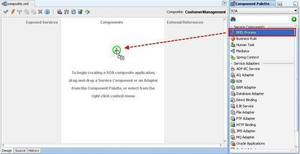
CustomerManagentSync into the Name field.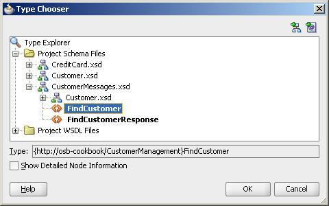
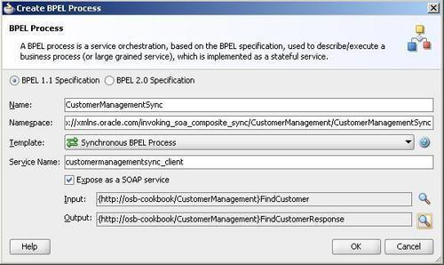
This will create a BPEL component with an exposed SOAP binding as shown in the following screenshot:
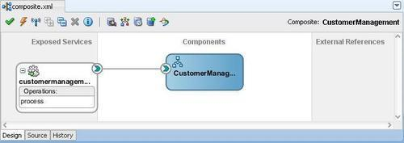
Now let's add a Direct Binding to the SCA composite. In JDeveloper perform the following steps:
CustomerManagementSyncDirect into the Name field. WSDL file created earlier. Select the CustomerManagementSync.wsdl file and click on OK.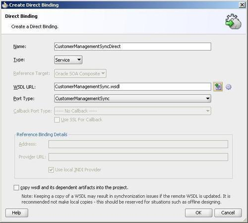
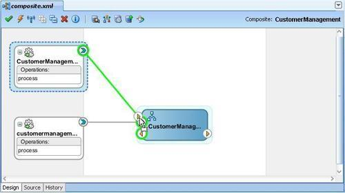
Next, we will change the BPEL component so that it will return the customer test data:
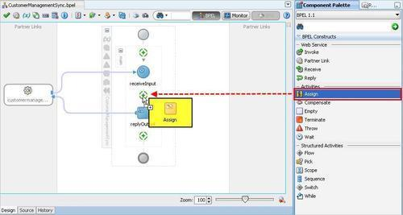
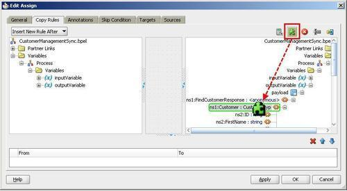
<Customer xmlns="http://osb-cookbook/CustomerManagement" xmlns:cus1="http://osb-cookbook/customer" xmlns:cred="http://osb-cookbook/creditcard"> <cus1:ID>100</cus1:ID> <cus1:FirstName>Larry</cus1:FirstName> <cus1:LastName>Ellison</cus1:LastName> <cus1:EmailAddress>larry.ellison@oracle.com</cus1:EmailAddress> <cus1:Addresses/> <cus1:BirthDate>1967-08-13</cus1:BirthDate> <cus1:Rating>A</cus1:Rating> <cus1:Gender>Male</cus1:Gender> <cus1:CreditCard> <cred:CardIssuer>visa</cred:CardIssuer> <cred:CardNumber>123</cred:CardNumber> <cred:CardholderName>Larry</cred:CardholderName> <cred:ExpirationDate>2020-01-01</cred:ExpirationDate> <cred:CardValidationCode>1233</cred:CardValidationCode> </cus1:CreditCard> </Customer>
CustomerMangementSync.bpel and composite.xml.Now we can deploy the SCA composite to the SOA Suite server. In JDeveloper perform the following steps:
Next let's test CustomerManagement composite. In Enterprise Manager, perform the following steps:
SOA folder in the tree on the left. soa-infra folder and click on the default node.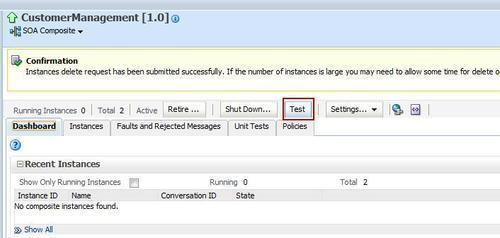
100 into the ID field and click on Test Web Service in the top-right corner.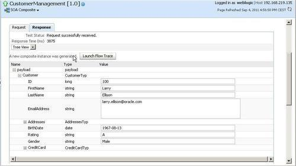
So far we have successfully created and tested the service provider side in SOA Suite. Now, let's implement the service consumer side on the OSB. First we need to get the WSDL of the SOA Direct Binding interface. We will retrieve the URL of the WSDL in JDeveloper and then use that URL to consume it in Eclipse OEPE.
In JDeveloper perform the following steps to retrieve the URL of the WSDL:
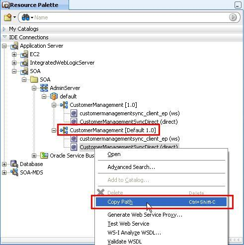
With the URL of the WSDL in the clipboard, let's create the business service by consuming the WSDL from the URL. In Eclipse OEPE, perform the following steps:
business folder, create a new business service and name it CustomerManagement. wsdl folder. The reference in the business service is automatically updated. xsd folder of the OSB project. ../xsd/CustomerMessages.xsd: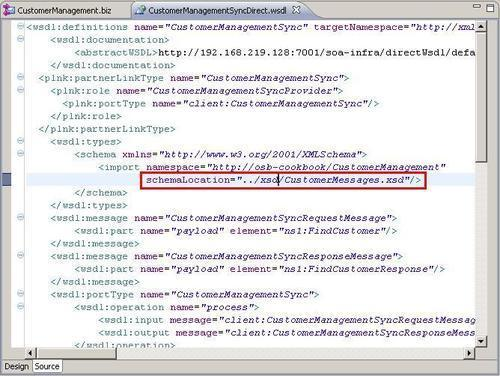
wsdl file. CustomerMangagement.biz business service, navigate to the Transport tab.Now let's test the service. In the Service Bus Console, perform the following steps:
100 and click on Execute.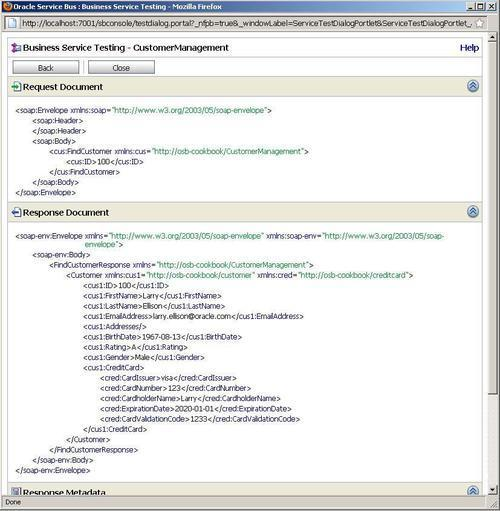
A business service can call a SOA Suite Direct Binding service wired to a SCA component by using the SOA-DIRECT transport.
In this recipe, we have used a BPEL component, but it could have been any other SCA component, such as a Mediator or Rule component. OSB will use the T3 RMI protocol to communicate to the SOA Suite server but IIOP could be used as well. Because the WSDL of the SOA Direct Binding interface defines a synchronous request/response message exchange pattern, the business service will wait for the response.
If the OSB and the SOA Suite are not in the same WebLogic domain, a service account needs to be created. The business service will use the service account to authenticate against the SOA Suite server.
ServiceAccountSOA into the File name. weblogic into the User Name field. CustomerManagement.biz business service and open the SOA-DIRECT Transport tab. security folder in the invoking-soa-composite-synchronously project and select ServiceAccountSOA.sa.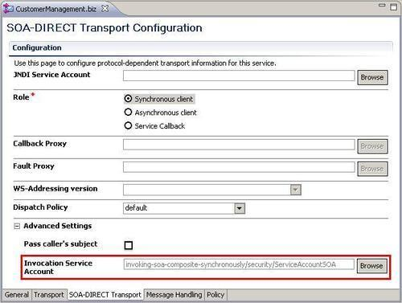